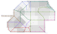

Thirty-eight routes, twenty sub-regions
Passenger trains run over 5,482 km. The federation's network is 6,210 km in all, and the rest is freight-only or lies inside the yards. The gauge is 1,435 mm everywhere, fixed by the Czechoslovak stock bought in the trade years. The wire is at 25 kV, 50 Hz over 5,425 km. The 785 km without wire are operated by R8 units on their battery reserve.
- 38 routes
- 145 stations
- 5,482 passenger route km
- 1,435 mm gauge
- 25 kV 50 Hz overhead
The network, drawn
Route lengths below are measured over the track each service uses, so a section used by two routes is counted in both. The network measure of 5,482 km counts every such section once. Station counts work the same way: the 145 stations of the network include interchanges that appear in the count of each route serving them. Distances and directions are simplified so that all thirty-eight routes fit in one picture. Large rings are the twenty-two towns, small rings the other stations. Dashed lines are the sub-regional boundaries. Each route is drawn in the colour of the group that operates it, and the key below the map lists them.

{kind=link}
- Northern Coast
- Central Valley
- Western Uplands
- Inland Plain
- Southern
- Eastern Main
- Grain Basin
- South-east Coast
The routes
| No | Route | Group | km | Time | Stns | Note |
|---|---|---|---|---|---|---|
| 1 | Lindoma to Torvena | Northern Coast | 214 | 3 h 02 | 7 | Wired as far as Ardessa. The last 34 km to Torvena run on the battery reserve. |
| 2 | Lindoma to Maravel | Northern Coast | 148 | 2 h 04 | 5 | The bay line. Two sections stand on causeway across the salt marsh, and both close to freight in a spring tide. |
| 3 | Sederna factory branch | Northern Coast | 18 | 0 h 20 | 3 | Runs to the carriage factory and the two Sederna depots. Empty stock, and one passenger train an hour for the shift changes. |
| 4 | Sederna to Durorilaqui | Central Valley | 356 | 7 h 03 | 7 | The valley climbs at 3.5 per cent between Halvena and Iscura, which fixes the timings for the whole route. |
| 5 | Calmena to Ilvara | Central Valley | 112 | 1 h 46 | 4 | Terrace line along the river. Single track, with passing loops at Merquena and Jorvela. |
| 6 | Calmena to Tavrino | Central Valley | 169 | 2 h 46 | 4 | Opened 1974 for the Tessilius fruit crop, and it now takes the morning workers to Tavrino. |
| 7 | Maravel to Ossira | Western Uplands | 232 | 3 h 34 | 6 | Quarry gradients from Solmena. Ossira is the last station before the open frontier with Iosmein. |
| 8 | Ferrista to Venasca | Western Uplands | 165 | 2 h 48 | 5 | Forestry line. Battery operation beyond Zelmura, where the wire stops. |
| 9 | Ossira frontier link | Western Uplands | 47 | 0 h 44 | 3 | Runs to the frontier at Quessina, where the Iosmein network takes over. Through carriages twice a day. |
| 10 | Durorilaqui to Venasca | Inland Plain | 118 | 1 h 52 | 4 | Straight across the arable plain, level for its whole length. |
| 11 | Durorilaqui to Vestrano | Inland Plain | 156 | 2 h 26 | 5 | Transports grain north in the autumn via the parralel freight night path. |
| 12 | Durorilaqui to Sarnova | Inland Plain | 143 | 2 h 20 | 4 | Single track. The passing loop at Ilmara sets the frequency at one train an hour each way. |
| 13 | Sarnova to Sornorum | Southern | 270 | 4 h 29 | 5 | The southern route. The 14:40 from Sarnova runs it, and the R8/A is allocated to it. |
| 14 | Sarnova to Dromera | Southern | 121 | 1 h 58 | 6 | The line stops 4 km short of the closed frontier with Bor Brashavenko. |
| 15 | Dromera to Sornorum | Southern | 134 | 2 h 10 | 4 | Southern link line, opened 1988. Half its length is embankment across drained ground. |
| 16 | Torvena to Leriduson | Eastern Main | 178 | 2 h 52 | 5 | Crosses between the regions on the moor. Wired in 1996. |
| 17 | Leriduson to Prevessa | Eastern Main | 108 | 1 h 42 | 4 | Mixed farming country. Four trains an hour at the peak, two the rest of the day. |
| 18 | Leriduson to Marendo | Eastern Main | 196 | 3 h 41 | 5 | Follows the lagoon shore. The ecological budget limits speed to 90 km per hour over the dune section. |
| 19 | Ilvara to Cortius | Grain Basin | 298 | 4 h 37 | 6 | The grain basin trunk. Runs 31 km straight between Irbena and Lundara. |
| 20 | Solvena to Prevessa | Grain Basin | 116 | 1 h 50 | 5 | Links the two eastern trunks. Some through trains from Lindoma to Prevessa use it. |
| 21 | Ilvara to Sornorum | Grain Basin | 264 | 4 h 12 | 6 | Large section of the central 1907 artery. |
| 22 | Cortius to Lutoliluri | South-east Coast | 158 | 2 h 32 | 4 | Ends at the southern port and the ferry berth for Sluland. Freight paths are reserved for the yard. |
| 23 | Cortius to Corcina | South-east Coast | 121 | 2 h 04 | 4 | Hill line. Climbs at 3.5 per cent for 11 km above Vadura. |
| 24 | Marendo to Corcina | South-east Coast | 103 | 1 h 46 | 4 | Coastal, single track, wired 2004. Closed to freight above 18 tonnes per axle. |
| 25 | Sornorum to Lutoliluri | South-east Coast | 132 | 2 h 08 | 4 | Completes the 1907 artery at the port. Eight R7 units an hour each way at the peak. |
| 26 | Lutoliluri harbour branch | South-east Coast | 29 | 0 h 26 | 3 | Serves the yard, the ferry berth and the fishery at Espara. Two carriages, every twenty minutes. |
| 27 | Maravel to Calmena | Central Valley | 133 | 2 h 08 | 4 | Chord across the valley head. Opened 1961 to spare the Sederna junction. |
| 28 | Torvena to Ilvara | Northern Coast | 137 | 2 h 12 | 4 | Direct route for the northern trains south without reversing at Sederna. |
| 29 | Ferrista to Durorilaqui | Western Uplands | 141 | 2 h 16 | 4 | Links the upland routes to the plain. Single track, one loop at Cordena. |
| 30 | Vestrano to Tavrino | Inland Plain | 118 | 1 h 54 | 4 | Diagonal between the southern and the central routes. |
| 31 | Tavrino to Cortius | Grain Basin | 205 | 3 h 13 | 5 | Crosses the basin, and trains terminating at the coast avoid Solvena by it. |
| 32 | Solvena to Marendo | Grain Basin | 126 | 2 h 02 | 4 | Eastern chord to the lagoon. Wired 1998. |
| 33 | Sarnova to Venasca | Southern | 131 | 2 h 06 | 4 | Western chord. Two trains an hour, three in the harvest. |
| 34 | Dromera to Vestrano | Southern | 92 | 1 h 30 | 4 | Short link between the southern branches. |
| 35 | Lindoma to Torvena direct | Northern Coast | 168 | 2 h 20 | 4 | The coast line, avoiding the Sederna junction. Through trains to Leriduson use it. |
| 36 | Prevessa to Marendo | Eastern Main | 125 | 1 h 59 | 4 | Joins the two eastern trunks along the lagoon head, so Leriduson trains reach Marendo without reversing. |
| 37 | Leriduson to Marendo direct | Eastern Main | 233 | 3 h 14 | 7 | Through service over the tracks of routes 17 and 36. Four trains a day, and the first of them calls at Marendo before the market opens. |
| 38 | Lonvera to Rusquena | Southern | 247 | 3 h 54 | 6 | Southern cross-country service. Calls at Halid and Beslic, and waits four minutes at Beslic for the tunnel walk. |
Stations
Towns are in bold. The 110 stations below are ones where through trains can be called at. The 35 halts after them are served by the local trains of the sub-regional members.
-
1 Lindoma to Torvena
Lindoma · Ospena · Sederna · Corvena · Brastina · Ardessa · Torvena
-
2 Lindoma to Maravel
Lindoma · Palura · Fossena · Nervara · Maravel
-
3 Sederna factory branch
Sederna · Delvena · Cassura
-
4 Sederna to Durorilaqui
Sederna · Grimela · Calmena · Halvena · Iscura · Lascura · Durorilaqui
-
5 Calmena to Ilvara
Calmena · Merquena · Jorvela · Ilvara
-
6 Calmena to Tavrino
Calmena · Dolvara · Erresta · Tavrino
-
7 Maravel to Ossira
Maravel · Solmena · Ferrista · Terrona · Ulmara · Ossira
-
8 Ferrista to Venasca
Ferrista · Varsena · Zelmura · Ravella · Venasca
-
9 Ossira frontier link
Ossira · Nossira · Quessina
-
10 Durorilaqui to Venasca
Durorilaqui · Prunara · Ondela · Venasca
-
11 Durorilaqui to Vestrano
Durorilaqui · Falcura · Gonvara · Estrela · Vestrano
-
12 Durorilaqui to Sarnova
Durorilaqui · Herrena · Ilmara · Sarnova
-
13 Sarnova to Sornorum
Sarnova · Lonvera · Vestrano · Marquessa · Sornorum
-
14 Sarnova to Dromera
Sarnova · Rondura · Halid · Beslic · Sabrena · Dromera
-
15 Dromera to Sornorum
Dromera · Tolmena · Urvena · Sornorum
-
16 Torvena to Leriduson
Torvena · Velsura · Andrena · Bosquela · Leriduson
-
17 Leriduson to Prevessa
Leriduson · Cerreta · Drumena · Prevessa
-
18 Leriduson to Marendo
Leriduson · Ervara · Fenestra · Galvena · Marendo
-
19 Ilvara to Cortius
Ilvara · Hostena · Solvena · Irbena · Lundara · Cortius
-
20 Solvena to Prevessa
Solvena · Mestura · Sarki · Nolvara · Prevessa
-
21 Ilvara to Sornorum
Ilvara · Orsena · Tavrino · Pilvara · Rusquena · Sornorum
-
22 Cortius to Lutoliluri
Cortius · Sallura · Trevena · Lutoliluri
-
23 Cortius to Corcina
Cortius · Umbrela · Vadura · Corcina
-
24 Marendo to Corcina
Marendo · Zerrona · Alvessa · Corcina
-
25 Sornorum to Lutoliluri
Sornorum · Brenova · Calduri · Lutoliluri
-
26 Lutoliluri harbour branch
Lutoliluri · Dortena · Espara
-
27 Maravel to Calmena
Maravel · Almora · Ambrena · Calmena
-
28 Torvena to Ilvara
Torvena · Brantela · Brusela · Ilvara
-
29 Ferrista to Durorilaqui
Ferrista · Cirvena · Cordena · Durorilaqui
-
30 Vestrano to Tavrino
Vestrano · Dalvura · Domvara · Tavrino
-
31 Tavrino to Cortius
Tavrino · Drumessa · Ermena · Estrona · Cortius
-
32 Solvena to Marendo
Solvena · Farnela · Fostella · Marendo
-
33 Sarnova to Venasca
Sarnova · Fulvena · Gormela · Venasca
-
34 Dromera to Vestrano
Dromera · Gostura · Gravena · Vestrano
-
35 Lindoma to Torvena direct
Lindoma · Nurella · Ortella · Torvena
-
36 Prevessa to Marendo
Prevessa · Hirvena · Imbrena · Marendo
-
37 Leriduson to Marendo direct
Leriduson · Cerreta · Drumena · Prevessa · Hirvena · Imbrena · Marendo
-
38 Lonvera to Rusquena
Lonvera · Halid · Beslic · Vestrano · Marquessa · Rusquena
Halts served by local trains
Bosquena · Halvora · Hastura · Hirvena · Instara · Ivrena · Larvena · Lastura · Lorvessa · Mirvena · Molvena · Mondela · Nastira · Nostela · Orvura · Ovrena · Pastena · Pelmura · Pervena · Quandira · Quirena · Rasquela · Rivessa · Ruvella · Serrola · Silvura · Sonvara · Tavella · Tornela · Trelmena · Ulvessa · Undela · Urvessa · Ustrena · Velmara